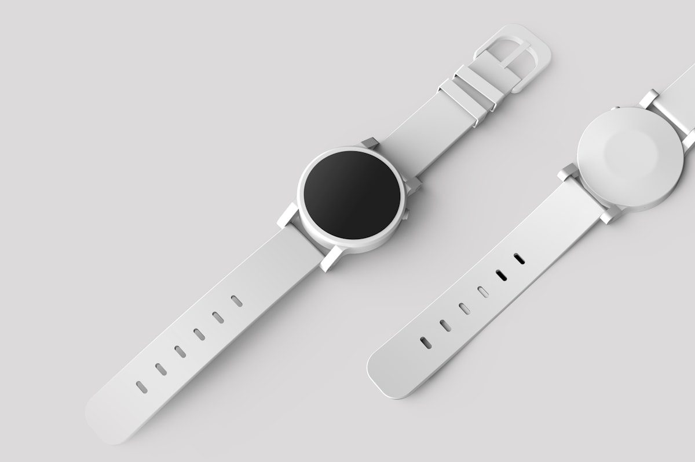

Grand Complication
41mm Platinum 950
•
Calibre MH-01
The Tourbillon Sovereign
One-minute flying tourbillon in a titanium carriage weighing just 0.28 grams. Features hand-guilloché grand feu enamel dial and twin barrels.